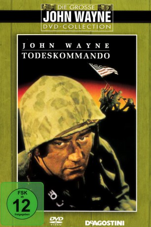
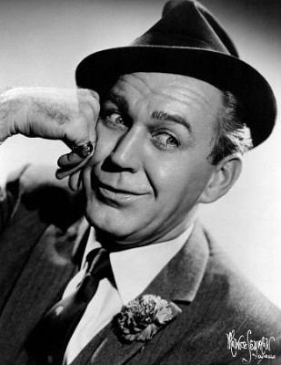

#9345 Todeskommando - Du warst unser Kamerad
Alternativ: Sands of Iwo Jima
Auszeichnungen: für 4 Oscars nominiert
 
 IMDB-Wertung: 7.2 / 10
IMDB-Wertung: 7.2 / 10  Metascore: 0
Metascore: 0 
Am 19. Februar 1945 landen über 100.000 amerikanische Soldaten auf der japanischen Insel Iwo Jima. Es soll die entscheidende Schlacht des Krieges im Pazifik werden. Unter den Befehlshabern befindet sich Sergeant Stryker ein harter und unerbittlicher Kommandant, der seine Männer bereits im Trainingscamp an den Rand ihrer Kräfte treibt. Doch unter der harten Schale verbirgt sich ein vom Schicksal gebeutelter Mann, der bereit ist, alles für seine Männer zu geben – auch das Leben.
Jahr: 1949
Dauer: 109 Minuten
FSK: 12
Land: USA Studio: ITonspuren:
Untertitel: Deutsch,
Auflösung: 1080p (1472x1080) Größe: 8949 MB
Genre: Action, Drama, Krieg, Liebe
Regisseur: Allan Dwan
Drehbuch: Harry Brown
Soundtrack: Victor Young
Darsteller:
 John Wayne als Sgt. John M. Stryker
John Wayne als Sgt. John M. Stryker John Agar als Pfc. Peter Conway
John Agar als Pfc. Peter Conway- Adele Mara als Allison Bromley
-  Forrest Tucker als Pfc. Al Thomas
- Wally Cassell als Pfc. Benny Regazzi
- James Brown als Pfc. Charlie Bass
- Richard Webb als Pfc. 'Handsome' Dan Shipley
- Arthur Franz als Cpl. Robert Dunne / Narrator
- Julie Bishop als Mary
- Peter Coe als Pfc. George Hellenpolis
 Richard Jaeckel als Pfc. Frank Flynn
Richard Jaeckel als Pfc. Frank Flynn- William Murphy als Pfc. Eddie Flynn
- George Tyne als Pfc. Harris
 Hal Baylor als Pvt. 'Sky' Choynski
Hal Baylor als Pvt. 'Sky' Choynski- John McGuire als Capt. Joyce
 Martin Milner als Pvt. Mike McHugh
Martin Milner als Pvt. Mike McHugh- David Clarke als Wounded Marine (uncredited)
- Bruce Edwards als Marine (uncredited)
- Dorothy Ford als Tall Girl (uncredited)
 Fred Graham als Officer (uncredited)
Fred Graham als Officer (uncredited) Don Haggerty als Colonel in Staff Car (uncredited)
Don Haggerty als Colonel in Staff Car (uncredited)- William Hudson als Marine (uncredited)
 I. Stanford Jolley als Forrestal (uncredited)
I. Stanford Jolley als Forrestal (uncredited) Dickie Jones als Scared Marine (uncredited)
Dickie Jones als Scared Marine (uncredited) Frank O'Connor als Waiter in Bar (uncredited)
Frank O'Connor als Waiter in Bar (uncredited) Dick Wessel als Grenade Instructor (uncredited)
Dick Wessel als Grenade Instructor (uncredited) Ted White als Marine (uncredited)
Ted White als Marine (uncredited)- James Holden als Pfc. Soames
- Leonard Gumley als Pvt. Sid Stein
- William Self als Pvt. L.D. Fowler Jr.
- David M. Shoup als Colonel D. M. Shoup
- H.P. Crowe als Lt. Col. H. P Crowe
- Harold G. Schrier als Captain Harold G. Schrier
- Rene A. Gagnon als Pfc Rene A Gagnon
- Ira H. Hayes als Pfc Ira H. Hayes
- John H. Bradley als PM3 / c John H. Bradley
- Conrad Binyon als Marine (uncredited)
- Fred Datig Jr. als Marine (uncredited)
- Carole Gallagher als USO Woman (uncredited)
- Don Hawks als Small Role (uncredited)
- Gil Herman als Lt. Baker (uncredited)
- Billy Lechner als Marine (uncredited)
- Mickey McCardle als Marine (uncredited)
- Roger McGee als Sailor (uncredited)
- Al Murphy als Bartender (uncredited)
- Judy Sochor als USO Woman (uncredited)
- Glen Vernon als Marine (uncredited)
- Steve Wayne als Marine (uncredited)
- John Whitney als Lt. Thompson (uncredited)
- Joy Windsor als USO Woman (uncredited)
Datei: X:\1900-1949\Todeskommando - Du warst unser Kamerad (1949, FSK12, 1472x1080).mkv seit 30.07.2018
Festplatte: HD 1900-1970
 Es gibt insgesamt 80 Filme in der Gruppe '1900-1949'
Es gibt insgesamt 80 Filme in der Gruppe '1900-1949'